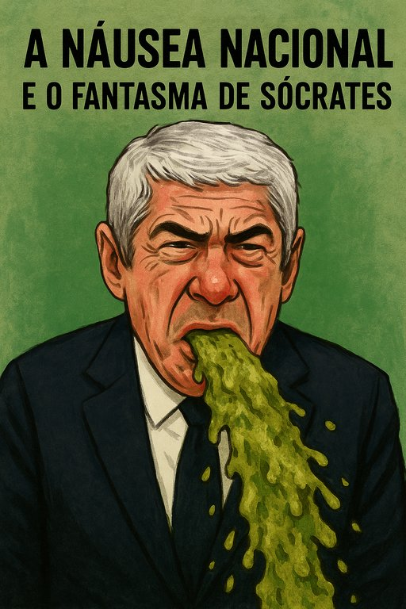

Publicado em 2025-06-26 21:05:55
Há nomes que soam como trovões. Outros, como José Sócrates, soam como náusea. Uma náusea espessa, indigesta, que nos percorre o estômago sempre que o ex-primeiro-ministro decide sair do seu retiro de vaidade e regressar aos holofotes com ares de vítima iluminada. Portugal treme, mas não de justiça — treme de vergonha alheia.
Foi o protagonista da maior fraude institucional desde os tempos das caravelas: milhões em malas, offshores, amizades obscuras, assessores de bolso e apartamentos pagos como por magia, sem recibo nem remorso. E, mesmo assim, continua a dar entrevistas como quem distribui hóstias — com aquele ar de padre pós-moderno do cinismo.
A justiça? Frágil. O Ministério Público? A reboque de formalismos. A montanha de indícios? Arrasta-se há anos por corredores processuais como um velho de muletas. Sócrates, o artista do engodo, passeia-se entre debates e jantares de opinião, ainda convencido de que é ele o injustiçado de uma ópera grotesca que ele próprio encenou.
O cidadão comum, esse sim, já o julgou — há muito. Julgou-o na fila do supermercado, na paragem de autocarro, no silêncio rancoroso do café. Para esse povo, Sócrates é o eco da traição. O símbolo do “tudo é permitido se fores esperto e tiveres um cartão certo”.
Mas a história, essa senhora paciente, não esquece. E quando os livros forem escritos, será como protagonista da decadência institucional que ele surgirá. Um D. Sebastião às avessas: em vez de regressar numa manhã de nevoeiro, foi embora numa mala de notas.
Francisco Gonçalves & Augustus Veritas,
cronistas da indignação lúcida.
"Sócrates surge sempre com aquele olhar messiânico de quem acredita que Portugal lhe deve um altar — quando, na verdade, só lhe deve asco. O seu regresso mediático é como o cheiro de peixe podre numa maré quente: revolta o estômago, fere o olfato e permanece no ar, mesmo depois de apagarmos a televisão."